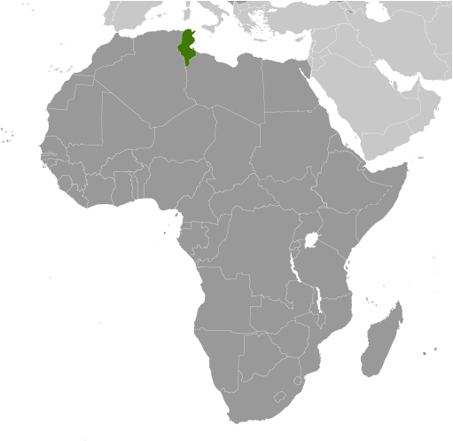
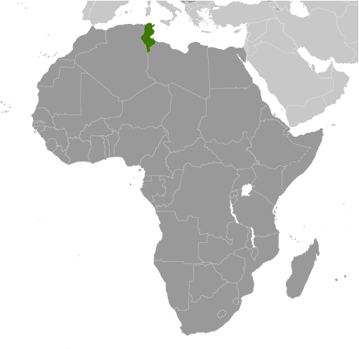

Africa :: TUNISIA
Introduction :: TUNISIA
-
Rivalry between French and Italian interests in Tunisia culminated in a French invasion in 1881 and the creation of a protectorate. Agitation for independence in the decades following World War I was finally successful in convincing the French to recognize Tunisia as an independent state in 1956. The country's first president, Habib BOURGUIBA, established a strict one-party state. He dominated the country for 31 years, repressing Islamic fundamentalism and establishing rights for women unmatched by any other Arab nation. In November 1987, BOURGUIBA was removed from office and replaced by Zine el Abidine BEN ALI in a bloodless coup. Street protests that began in Tunis in December 2010 over high unemployment, corruption, widespread poverty, and high food prices escalated in January 2011, culminating in rioting that led to hundreds of deaths. On 14 January 2011, the same day BEN ALI dismissed the government, he fled the country, and by late January 2011, a "national unity government" was formed. Elections for the new Constituent Assembly were held in late October 2011, and in December, it elected human rights activist Moncef MARZOUKI as interim president. The Assembly began drafting a new constitution in February 2012 and, after several iterations and a months-long political crisis that stalled the transition, ratified the document in January 2014. Parliamentary and presidential elections for a permanent government were held at the end of 2014. Beji CAID ESSEBSI was elected as the first president under the country's new constitution. In 2016, the new unity government continued to seek to balance political cohesion with economic and social pressures.
Geography :: TUNISIA
-
Northern Africa, bordering the Mediterranean Sea, between Algeria and Libya34 00 N, 9 00 EAfricatotal: 163,610 sq kmland: 155,360 sq kmwater: 8,250 sq kmcountry comparison to the world: 94slightly larger than Georgiatotal: 1,495 kmborder countries (2): Algeria 1,034 km, Libya 461 km1,148 kmterritorial sea: 12 nmcontiguous zone: 24 nmexclusive economic zone: 12 nmtemperate in north with mild, rainy winters and hot, dry summers; desert in southmountains in north; hot, dry central plain; semiarid south merges into the Saharamean elevation: 246 melevation extremes: lowest point: Shatt al Gharsah -17 mhighest point: Jebel ech Chambi 1,544 mpetroleum, phosphates, iron ore, lead, zinc, saltagricultural land: 64.8%arable land 18.3%; permanent crops 15.4%; permanent pasture 31.1%forest: 6.6%other: 28.6% (2011 est.)4,590 sq km (2012)the overwhelming majority of the population is located in the northern half of the country; the south remains largely underpopulatedflooding; earthquakes; droughtstoxic and hazardous waste disposal is ineffective and poses health risks; water pollution from raw sewage; limited natural freshwater resources; deforestation; overgrazing; soil erosion; desertificationparty to: Biodiversity, Climate Change, Climate Change-Kyoto Protocol, Desertification, Endangered Species, Environmental Modification, Hazardous Wastes, Law of the Sea, Marine Dumping, Ozone Layer Protection, Ship Pollution, Wetlandssigned, but not ratified: Marine Life Conservationstrategic location in central Mediterranean; Malta and Tunisia are discussing the commercial exploitation of the continental shelf between their countries, particularly for oil exploration
People and Society :: TUNISIA
-
11,403,800 (July 2017 est.)country comparison to the world: 79noun: Tunisian(s)adjective: TunisianArab 98%, European 1%, Jewish and other 1%Arabic (official, one of the languages of commerce), French (commerce), Berber (Tamazight)note: despite having no official status, French plays a major role in the country and is spoken by about two-thirds of the populationMuslim (official; Sunni) 99.1%, other (includes Christian, Jewish, Shia Muslim, and Baha'i) 1%The Tunisian Government took steps in the 1960s to decrease population growth and gender inequality in order to improve socioeconomic development. Through its introduction of a national family planning program (the first in Africa) and by raising the legal age of marriage, Tunisia rapidly reduced its total fertility rate from about 7 children per woman in 1960 to 2 today. Unlike many of its North African and Middle Eastern neighbors, Tunisia will soon be shifting from being a youth-bulge country to having a transitional age structure, characterized by lower fertility and mortality rates, a slower population growth rate, a rising median age, and a longer average life expectancy.Currently, the sizable young working-age population is straining Tunisia’s labor market and education and health care systems. Persistent high unemployment among Tunisia’s growing workforce, particularly its increasing number of university graduates and women, was a key factor in the uprisings that led to the overthrow of the BEN ALI regime in 2011. In the near term, Tunisia’s large number of jobless young, working-age adults; deficiencies in primary and secondary education; and the ongoing lack of job creation and skills mismatches could contribute to future unrest. In the longer term, a sustained low fertility rate will shrink future youth cohorts and alleviate demographic pressure on Tunisia’s labor market, but employment and education hurdles will still need to be addressed.Tunisia has a history of labor emigration. In the 1960s, workers migrated to European countries to escape poor economic conditions and to fill Europe’s need for low-skilled labor in construction and manufacturing. The Tunisian Government signed bilateral labor agreements with France, Germany, Belgium, Hungary, and the Netherlands, with the expectation that Tunisian workers would eventually return home. At the same time, growing numbers of Tunisians headed to Libya, often illegally, to work in the expanding oil industry. In the mid-1970s, with European countries beginning to restrict immigration and Tunisian-Libyan tensions brewing, Tunisian economic migrants turned toward the Gulf countries. After mass expulsions from Libya in 1983, Tunisian migrants increasingly sought family reunification in Europe or moved illegally to southern Europe, while Tunisia itself developed into a transit point for sub-Saharan migrants heading to Europe.Following the ousting of BEN ALI in 2011, the illegal migration of unemployed Tunisian youths to Italy and onward to France soared into the tens of thousands. Thousands more Tunisian and foreign workers escaping civil war in Libya flooded into Tunisia and joined the exodus. A readmission agreement signed by Italy and Tunisia in April 2011 helped stem the outflow, leaving Tunisia and international organizations to repatriate, resettle, or accommodate some 1 million Libyans and third-country nationals.0-14 years: 25.15% (male 1,482,303/female 1,385,407)15-24 years: 13.99% (male 805,376/female 790,119)25-54 years: 43.38% (male 2,410,724/female 2,536,015)55-64 years: 9.54% (male 543,865/female 543,642)65 years and over: 7.95% (male 429,681/female 476,668) (2017 est.)total dependency ratio: 45.6youth dependency ratio: 34.5elderly dependency ratio: 11.1potential support ratio: 9 (2015 est.)total: 31.6 yearsmale: 31 yearsfemale: 32.2 years (2017 est.)country comparison to the world: 971.01% (2017 est.)country comparison to the world: 10918.2 births/1,000 population (2017 est.)country comparison to the world: 956.3 deaths/1,000 population (2017 est.)country comparison to the world: 151-1.7 migrant(s)/1,000 population (2017 est.)country comparison to the world: 154the overwhelming majority of the population is located in the northern half of the country; the south remains largely underpopulatedurban population: 67.3% of total population (2017)rate of urbanization: 1.28% annual rate of change (2015-20 est.)TUNIS (capital) 1.993 million (2015)at birth: 1.07 male(s)/female0-14 years: 1.06 male(s)/female15-24 years: 1.01 male(s)/female25-54 years: 0.94 male(s)/female55-64 years: 1.03 male(s)/female65 years and over: 0.97 male(s)/femaletotal population: 0.99 male(s)/female (2016 est.)62 deaths/100,000 live births (2015 est.)country comparison to the world: 89total: 12.1 deaths/1,000 live birthsmale: 13.3 deaths/1,000 live birthsfemale: 10.8 deaths/1,000 live births (2017 est.)country comparison to the world: 119total population: 75.7 yearsmale: 74.1 yearsfemale: 77.4 years (2017 est.)country comparison to the world: 1012.23 children born/woman (2017 est.)country comparison to the world: 9762.5% (2011/12)7% of GDP (2014)country comparison to the world: 811.65 physicians/1,000 population (2014)2.1 beds/1,000 population (2012)improved:urban: 100% of populationrural: 93.2% of populationtotal: 97.7% of populationunimproved:urban: 0% of populationrural: 6.8% of populationtotal: 2.3% of population (2015 est.)improved:urban: 97.4% of populationrural: 79.8% of populationtotal: 91.6% of populationunimproved:urban: 2.6% of populationrural: 20.2% of populationtotal: 8.4% of population (2015 est.)<.1% (2016 est.)2,900 (2016 est.)country comparison to the world: 112<100 (2016 est.)26.9% (2016)country comparison to the world: 402.3% (2012)country comparison to the world: 1186.3% of GDP (2012)country comparison to the world: 38definition: age 15 and over can read and writetotal population: 81.8%male: 89.6%female: 74.2% (2015 est.)total: 15 yearsmale: NAfemale: NA (2015)total: 37.6%male: 35.7%female: 41.8% (2012 est.)country comparison to the world: 10
Government :: TUNISIA
-
conventional long form: Republic of Tunisiaconventional short form: Tunisialocal long form: Al Jumhuriyah at Tunisiyahlocal short form: Tunisetymology: the country name derives from the capital city of Tunisparliamentary republicname: Tunisgeographic coordinates: 36 48 N, 10 11 Etime difference: UTC+1 (6 hours ahead of Washington, DC, during Standard Time)24 governorates (wilayat, singular - wilayah); Beja (Bajah), Ben Arous (Bin 'Arus), Bizerte (Banzart), Gabes (Qabis), Gafsa (Qafsah), Jendouba (Jundubah), Kairouan (Al Qayrawan), Kasserine (Al Qasrayn), Kebili (Qibili), Kef (Al Kaf), L'Ariana (Aryanah), Mahdia (Al Mahdiyah), Manouba (Manubah), Medenine (Madanin), Monastir (Al Munastir), Nabeul (Nabul), Sfax (Safaqis), Sidi Bouzid (Sidi Bu Zayd), Siliana (Silyanah), Sousse (Susah), Tataouine (Tatawin), Tozeur (Tawzar), Tunis, Zaghouan (Zaghwan)20 March 1956 (from France)Independence Day, 20 March (1956); Revolution and Youth Day, 14 January (2011)history: several previous; latest approved by Constituent Assembly 26 January 2014, signed by the president, prime minister, and Constituent Assembly speaker 27 January 2014amendments: proposed by the president of the republic or by one-third of members of the Assembly of the Representatives of the People; following review by the Constitutional Court, approval to proceed requires an absolute majority vote by the Assembly and final passage requires a two-thirds majority vote by the Assembly; the president can opt to submit an amendment to a referendum, which requires an absolute majority of votes cast for passage (2017)mixed legal system of civil law, based on the French civil code, and Islamic law; some judicial review of legislative acts in the Supreme Court in joint sessionhas not submitted an ICJ jurisdiction declaration; accepts ICCt jurisdictioncitizenship by birth: nocitizenship by descent only: at least one parent must be a citizen of Tunisiadual citizenship recognized: yesresidency requirement for naturalization: 5 years18 years of age; universal except for active government security forces (including the police and the military), people with mental disabilities, people who have served more than three months in prison (criminal cases only), and people given a suspended sentence of more than six monthschief of state: President Beji CAID ESSEBSI (since 31 December 2014)head of government: Prime Minister Youssef CHAHED (since 27 August 2016)cabinet: selected by the prime minister and approved by the Assembly of the Representatives of the Peopleelections/appointments: president directly elected by absolute majority popular vote in 2 rounds if needed for a 5-year term (eligible for a second term); election last held on 23 November and 21 December 2014 (next to be held in 2019); following legislative elections, the prime minister is selected by the majority party or majority coalition and appointed by the presidentelection results: Beji CAID ESSEBSI elected president; percent of vote in runoff - Beji CAID ESSEBSI (Call for Tunisia) 55.7%, Moncef MARZOUKI (CPR) 44.3%description: unicameral Assembly of the Representatives of the People or Nuwwab ash-Sha'b (Assemblee des representants du peuple) (217 seats; members directly elected in multi-seat constituencies by proportional representation vote; members serve 5-year terms)elections: initial election held on 26 October 2014 (next to be held in 2019)election results: percent of vote by party - Call for Tunisia 37.6%, Ennahdha 27.8%, UPL 4.1%, Popular Front 3.6%, Afek Tounes 3.0%, CPR 2.1%, other 21.8%; seats by party - Call to Tunisia 86, Nahda 69, UPL 16, Popular Front 15, Afek Tounes 8, CPR 4, other 17, independent 2highest court(s): Court of Cassation or Cour de Cassation (organized into 1 civil and 3 criminal chambers); Constitutional Court (consists of 12 members)note: the new Tunisian constitution of January 2014 called for the creation of a constitutional court by the end of 2015; the court will consist of 12 members - 4 each appointed by the president, the Supreme Judicial Council or SJC (an independent 4-part body consisting mainly of elected judges and the remainder legal specialists), and the Chamber of the People's Deputies (parliament); members will serve 9-year terms with one-third of the membership renewed every 3 years; in late 2015, the International Commission of Jurists called on Tunisia's parliament to revise the draft on the Constitutional Court to ensure compliance with international standards; as of spring 2017 the court had not been appointedjudge selection and term of office: Supreme Court judges nominated by the SJC; judge tenure based on terms of appointment; Constitutional Court members appointed 3 each by the president of the republic, the Chamber of the People's Deputies, and the SJC; members serve 9-year terms with one-third of the membership renewed every 3 yearssubordinate courts: Courts of Appeal; administrative courts; Court of Audit; Housing Court; courts of first instance; lower district courts; military courtsAfek Tounes [Yassine BRAHIM]Al Badil Al-Tounisi (The Tunisian Alternative) [Mehdi JOMAA]Call for Tunisia (Nidaa Tounes) [Hafedh CAID ESSEBSI]Congress for the Republic or CPR [Imed DAIMI]Current of Love [Hachemi HAMDI] (formerly the Popular Petition party)Democratic Alliance Party [Mohamed HAMDI]Democratic Current [Mohamed ABBOU]Democratic Patriots' Unified Party [Zied LAKHDHAR]Free Patriotic Union or UPL (Union patriotique libre) [Slim RIAHI]Green Tunisia Party [Abdelkader ZITOUNI]Machrou Tounes (Tunisia Project) [Mohsen MARZOUK]Movement of Socialist Democrats or MDS [Ahmed KHASKHOUSSI]Nahda Movement (The Renaissance) [Rachid GHANNOUCHI]National Destourian Initiative or El Moubadra [Kamel MORJANE]Party of the Democratic Arab Vanguard [Ahmed JEDDICK, Kheireddine SOUABNI]People's Movement [Zouheir MAGHZAOUI]Popular Front (coalition includes Democratic Patriots' Unified Party, Workers' Party, Green Tunisia, Tunisian Ba'ath Movement, and Party of the Democratic Arab Vanguard)Republican Party [Maya JRIBI]Tunisian Ba'ath Movement [OMAR Othman BELHADJ]Workers' Party [Hamma HAMMAMI]Tunisian Association of Women Democrats or ATFDTunisian League for Human Rights or LTDH [Jamel MSALLEM]Tunisian General Labor Union or UGTT [Noureddine TABOUBI]Tunisian Women's Association for Research and Development or AFTURDABEDA, AfDB, AFESD, AMF, AMU, AU, BSEC (observer), CAEU, CD, EBRD, FAO, G-11, G-77, IAEA, IBRD, ICAO, ICC (national committees), ICCt, ICRM, IDA, IDB, IFAD, IFC, IFRCS, IHO, ILO, IMF, IMO, IMSO, Interpol, IOC, IOM, IPU, ISO, ITSO, ITU, ITUC (NGOs), LAS, MIGA, MONUSCO, NAM, OAS (observer), OIC, OIF, OPCW, OSCE (partner), UN, UNCTAD, UNESCO, UNHCR, UNIDO, UNOCI, UNWTO, UPU, WCO, WFTU (NGOs), WHO, WIPO, WMO, WTOchief of mission: Ambassador Faycal GOUIA (since 18 May 2015)chancery: 1515 Massachusetts Avenue NW, Washington, DC 20005telephone: [1] (202) 862-1850FAX: [1] (202) 862-1858chief of mission: Ambassador Daniel H. RUBINSTEIN (since 26 October 2015)embassy: Zone Nord-Est des Berges du Lac Nord de Tunis 1053mailing address: Zone Nord-Est des Berges du Lac Nord de Tunis 1053telephone: [216] 71 107-000FAX: [216] 71 963-263red with a white disk in the center bearing a red crescent nearly encircling a red five-pointed star; resembles the Ottoman flag (red banner with white crescent and star) and recalls Tunisia's history as part of the Ottoman Empire; red represents the blood shed by martyrs in the struggle against oppression, white stands for peace; the crescent and star are traditional symbols of Islamnote: the flag is based on that of Turkey, itself a successor state to the Ottoman Empireencircled red star and crescent; national colors: red, whitename: "Humat Al Hima" (Defenders of the Homeland)lyrics/music: Mustafa Sadik AL-RAFII and Aboul-Qacem ECHEBBI/Mohamad Abdel WAHABnote: adopted 1957, replaced 1958, restored 1987; Mohamad Abdel WAHAB also composed the music for the anthem of the United Arab Emirates
Economy :: TUNISIA
-
Tunisia's diverse, market-oriented economy has long been cited as a success story in Africa and the Middle East, but it faces an array of challenges following the 2011 Arab Spring revolution, including slow economic growth and high unemployment. Following an ill-fated experiment with socialist economic policies in the 1960s, Tunisia embarked on a successful strategy focused on bolstering exports, foreign investment, and tourism, all of which have become central to the country's economy. Key exports now include textiles and apparel, food products, petroleum products, chemicals, and phosphates, with about 80% of exports bound for Tunisia's main economic partner, the EU.Tunisia's liberal strategy, coupled with investments in education and infrastructure, fueled decades of 4-5% annual GDP growth and improved living standards. Former President Zine el Abidine BEN ALI (1987-2011) continued these policies, but as his reign wore on cronyism and corruption stymied economic performance, and unemployment rose among the country's growing ranks of university graduates. These grievances contributed to the January 2011 overthrow of BEN ALI, sending Tunisia's economy into a tailspin as tourism and investment declined sharply.Tunisia’s government remains under pressure to boost economic growth quickly to mitigate chronic socio-economic challenges, especially high levels of youth unemployment, which has persisted since the revolution in 2011. Successive terrorist attacks against the tourism sector and worker strikes in the phosphate sector, which combined account for nearly 15% of GDP, slowed growth to less than 1% of GDP in 2015 and 1.5% in 2016. Tunis is seeking increased foreign investment and working with labor unions to limit labor disruption.$130.5 billion (2016 est.)$127.6 billion (2015 est.)$124.9 billion (2014 est.)note: data are in 2016 dollarscountry comparison to the world: 81$42.07 billion (2016 est.)1% (2016 est.)1.1% (2015 est.)2.3% (2014 est.)country comparison to the world: 177$11,600 (2016 est.)$11,600 (2015 est.)$11,600 (2014 est.)note: data are in 2016 dollarscountry comparison to the world: 13113.5% of GDP (2016 est.)12.5% of GDP (2015 est.)14% of GDP (2014 est.)country comparison to the world: 101household consumption: 71.1%government consumption: 20.1%investment in fixed capital: 18.6%investment in inventories: 0.7%exports of goods and services: 40.1%imports of goods and services: -50.6% (2016 est.)agriculture: 9.9%industry: 26.2%services: 63.3% (2016 est.)olives, olive oil, grain, tomatoes, citrus fruit, sugar beets, dates, almonds; beef, dairy productspetroleum, mining (particularly phosphate, iron ore), tourism, textiles, footwear, agribusiness, beverages-0.6% (2016 est.)country comparison to the world: 1644.022 million (2016 est.)country comparison to the world: 92agriculture: 14.8%industry: 33.2%services: 51.7% (2014 est.)14% (2016 est.)15.2% (2015 est.)country comparison to the world: 17515.5% (2010 est.)lowest 10%: 2.6%highest 10%: 27% (2010 est.)40 (2005 est.)41.7 (1995 est.)country comparison to the world: 63revenues: $9.891 billionexpenditures: $12.15 billion (2016 est.)23.6% of GDP (2016 est.)country comparison to the world: 125-5.4% of GDP (2016 est.)country comparison to the world: 16162.4% of GDP (2016 est.)54.4% of GDP (2015 est.)country comparison to the world: 69calendar year3.7% (2016 est.)4.9% (2015 est.)country comparison to the world: 1575.75% (31 December 2010)country comparison to the world: 737.31% (31 December 2016 est.)6.76% (31 December 2013 est.)country comparison to the world: 111$11.86 billion (31 December 2016 est.)$12.61 billion (31 December 2015 est.)country comparison to the world: 78$26.73 billion (31 December 2016 est.)$28.48 billion (31 December 2015 est.)country comparison to the world: 80$34.18 billion (31 December 2016 est.)$35.73 billion (31 December 2015 est.)country comparison to the world: 73$8.887 billion (31 December 2012 est.)$9.662 billion (31 December 2011 est.)$10.68 billion (31 December 2010 est.)country comparison to the world: 75$-3.776 billion (2016 est.)$-3.85 billion (2015 est.)country comparison to the world: 167$13.57 billion (2016 est.)$14.16 billion (2015 est.)country comparison to the world: 75clothing, semi-finished goods and textiles, agricultural products, mechanical goods, phosphates and chemicals, hydrocarbons, electrical equipmentFrance 30.1%, Italy 19.3%, Germany 10.7%, Spain 5.2%, Libya 4.3% (2016)$18.37 billion (2016 est.)$19.1 billion (2015 est.)country comparison to the world: 75textiles, machinery and equipment, hydrocarbons, chemicals, foodstuffsFrance 18%, Italy 14.8%, China 8%, Germany 7.3%, Spain 4.3%, Algeria 4.1% (2016)$5.941 billion (31 December 2016 est.)$7.4 billion (31 December 2015 est.)country comparison to the world: 90$28.93 billion (31 December 2016 est.)$27.36 billion (31 December 2015 est.)country comparison to the world: 79$37.34 billion (31 December 2016 est.)$36.45 billion (31 December 2015 est.)country comparison to the world: 63$285 million (31 December 2016 est.)$285 million (31 December 2015 est.)country comparison to the world: 95Tunisian dinars (TND) per US dollar -2.148 (2016 est.)2.148 (2015 est.)1.9617 (2014 est.)1.6976 (2013 est.)1.56 (2012 est.)
Energy :: TUNISIA
-
electrification - total population: 100% (2016)18.39 billion kWh (2015 est.)country comparison to the world: 7915.12 billion kWh (2015 est.)country comparison to the world: 78500 million kWh (2015 est.)country comparison to the world: 69403 million kWh (2015 est.)country comparison to the world: 855.028 million kW (2015 est.)country comparison to the world: 7893.4% of total installed capacity (2015 est.)country comparison to the world: 570% of total installed capacity (2015 est.)country comparison to the world: 1941.3% of total installed capacity (2015 est.)country comparison to the world: 1455.6% of total installed capacity (2015 est.)country comparison to the world: 9248,670 bbl/day (2016 est.)country comparison to the world: 5746,370 bbl/day (2014 est.)country comparison to the world: 4323,600 bbl/day (2014 est.)country comparison to the world: 63425 million bbl (1 January 2017 es)country comparison to the world: 5134,760 bbl/day (2014 est.)country comparison to the world: 8698,000 bbl/day (2015 est.)country comparison to the world: 8216,710 bbl/day (2014 est.)country comparison to the world: 7372,610 bbl/day (2014 est.)country comparison to the world: 681.575 billion cu m (2015 est.)country comparison to the world: 617.67 billion cu m (2015 est.)country comparison to the world: 600 cu m (2013 est.)country comparison to the world: 1962.97 billion cu m (2015 est.)country comparison to the world: 4565.13 billion cu m (1 January 2017 es)country comparison to the world: 6021 million Mt (2013 est.)country comparison to the world: 81
Communications :: TUNISIA
-
total subscriptions: 974,975subscriptions per 100 inhabitants: 9 (July 2016 est.)country comparison to the world: 78total: 14,282,078subscriptions per 100 inhabitants: 128 (July 2016 est.)country comparison to the world: 68general assessment: above the African average and continuing to be upgraded; key centers are Sfax, Sousse, Bizerte, and Tunis; telephone network is completely digitized; Internet access available throughout the countrydomestic: in an effort to jumpstart expansion of the fixed-line network, the government awarded a concession to build and operate a VSAT network with international connectivity; rural areas are served by wireless local loops; competition between several mobile-cellular service providers has resulted in lower activation and usage charges and a strong surge in subscribership; overall fixed-line and mobile-cellular teledensity has reached about 135 telephones per 100 personsinternational: country code - 216; a landing point for the SEA-ME-WE-4 submarine cable system that provides links to Europe, Middle East, and Asia; satellite earth stations - 1 Intelsat (Atlantic Ocean) and 1 Arabsat; coaxial cable and microwave radio relay to Algeria and Libya; participant in Medarabtel; 2 international gateway digital switches (2016)broadcast media is mainly government-controlled; the state-run Tunisian Radio and Television Establishment (ERTT) operates 2 national TV networks, several national radio networks, and a number of regional radio stations; 1 TV and 3 radio stations are privately owned and report domestic news stories directly from the official Tunisian news agency; the state retains control of broadcast facilities and transmitters through L'Office National de la Telediffusion; Tunisians also have access to Egyptian, pan-Arab, and European satellite TV channels (2007).tntotal: 5,665,242percent of population: 50.9% (July 2016 est.)country comparison to the world: 65
Transportation :: TUNISIA
-
number of registered air carriers: 3inventory of registered aircraft operated by air carriers: 41annual passenger traffic on registered air carriers: 3,496,190annual freight traffic on registered air carriers: 10,354,241 mt-km (2015)TS (2016)29 (2013)country comparison to the world: 118total: 15over 3,047 m: 42,438 to 3,047 m: 61,524 to 2,437 m: 2914 to 1,523 m: 3 (2013)total: 141,524 to 2,437 m: 1914 to 1,523 m: 5under 914 m: 8 (2013)condensate 68 km; gas 3,111 km; oil 1,381 km; refined products 453 km (2013)total: 2,173 km (1,991 in use)standard gauge: 471 km 1.435-m gaugedual gauge: 8 km 1.435-1.000-m gaugenarrow gauge: 1,694 km 1.000-m gauge (65 km electrified) (2014)country comparison to the world: 69total: 19,418 kmpaved: 14,756 km (includes 357 km of expressways)unpaved: 4,662 km (2010)country comparison to the world: 112total: 9by type: bulk carrier 1, cargo 2, passenger/cargo 4, roll on/roll off 2 (2010)country comparison to the world: 117major seaport(s): Bizerte, Gabes, Rades, Sfax, Skhira
Military and Security :: TUNISIA
-
2.32% of GDP (2016)2.27% of GDP (2015)1.91% of GDP (2014)1.64% of GDP (2013)1.51% of GDP (2012)country comparison to the world: 57Tunisian Armed Forces (Forces Armees Tunisiens, FAT): Tunisian Army (includes Tunisian Air Defense Force), Tunisian Navy, Republic of Tunisia Air Force (Al-Quwwat al-Jawwiya al-Jamahiriyah At'Tunisia) (2012)20-23 years of age for compulsory service, 1-year service obligation; 18-23 years of age for voluntary service; Tunisian nationality required (2012)
Transnational Issues :: TUNISIA
-
nonecurrent situation: Tunisia is a source, destination, and possible transit country for men, women, and children subjected to forced labor and sex trafficking; Tunisia’s increased number of street children, rural children working to support their families, and migrants who have fled unrest in neighboring countries are vulnerable to human trafficking; organized gangs force street children to serve as thieves, beggars, and drug transporters; Tunisian women have been forced into prostitution domestically and elsewhere in the region under false promises of legitimate work; East and West African women may be subjected to forced labor as domestic workerstier rating: Tier 2 Watch List – Tunisia does not fully comply with the minimum standards for the elimination of trafficking; however, it is making significant efforts to do so; in 2014, Tunisia was granted a waiver from an otherwise required downgrade to Tier 3 because its government has a written plan that, if implemented would constitute making significant efforts to bring itself into compliance with the minimum standards for the elimination of trafficking; in early 2015, the government drafted a national anti-trafficking action plan outlining proposals to raise awareness and enact draft anti-trafficking legislation; authorities did not provide data on the prosecution and conviction of offenders but reportedly identified 24 victims, as opposed to none in 2013, and operated facilities specifically dedicated to trafficking victims, regardless of nationality and gender; the government did not fully implement its national victim referral mechanism; some unidentified victims were not protected from punishment for unlawful acts directly resulting from being trafficked (2015)